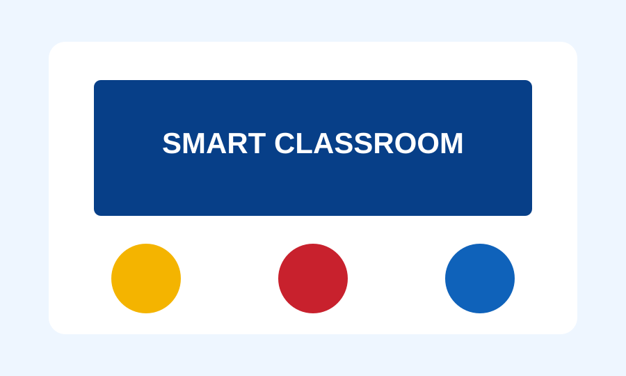

State-of-the-Art Facilities
Our school boasts cutting-edge facilities, including VR set classes, AI robotics, and an advanced Computer Lab, where students can explore the latest technologies and develop their skills.
Our English Language Lab is designed to enhance language proficiency, while our well-stocked library provides a conducive environment for learning and academic growth.